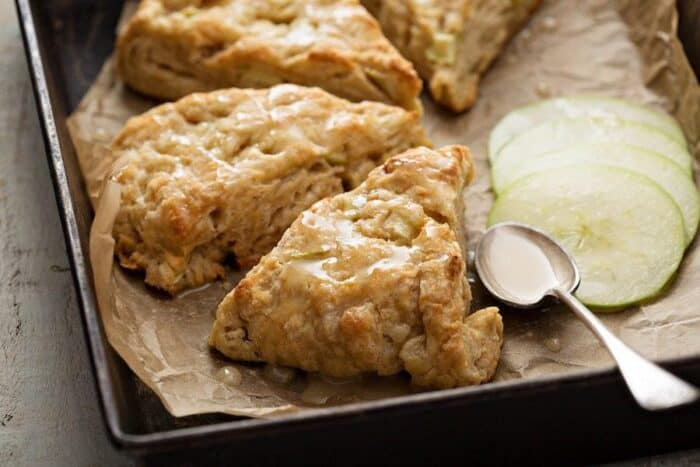

Apple Scones

Apple Cinammon Scones
These apple scones are absolutey delicious warmed up with a pad of butter on a brisk winter morning.
Once you have this recipe down you'll never dread donning the winter clothing to drive to a coffee
shop for a fresh pastry again. Super easy, chewy, mouth-watering breakfast heaven!
INGREDIENTS
- 2 cups flour
- 1/3 cup sugar
- 2 tsp baking powder
- 1/2 tsp baking soda
- 1 tsp cinnamon
- 1/4 cup cold butter or margarine
- 1 cup shredded apple
- 1/2 cup milk
- 1 tbsp sugar and cinnamon for springling if desired
- 1 tbsp glaze
- 1 cup powdered sugar
- 2 tbsp m milk
- 1/2 tsp vanilla extract
STEPS
- Pre-heat your oven to 425 degrees. Combine all of your dry ingredients,
and mix them together well. If you like spicier scones, add another 1/2 tsp cinnamon,
or better yet, some nutmeg or cloves.
- Cut in the 1/4 cup or margarine or butter.
- Shred your apple. Add the shredded apple, then the milk and mix until they form a
soft dough. Add a bit of flour if the dough is too sticky, it really depends on how moist
your shredded apple is.
- Knead a few times, working some extra flour into it until it is barely sticky. Divide
into two balls of dough.
- Flatten until they are two circles that are about 6 inches in diameter. If you like, scour
lines on the top to divide them into 6 pieces.
- Place them on a well greased baking sheet and sprinkle them with brown sugar and/or cinnamon.
- Pop into the over and bake for 15- 20 minutes until they are golden brown. Remove and cool.
- When the scones are cooled,, whisk together the glaze ingredients until they are smooth. Drizzle
over the scones then let harden completely.